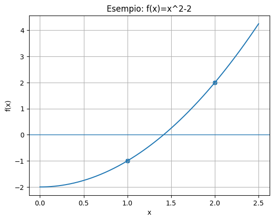
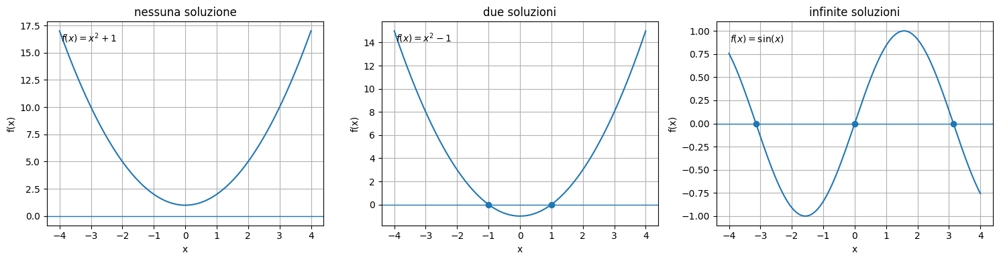
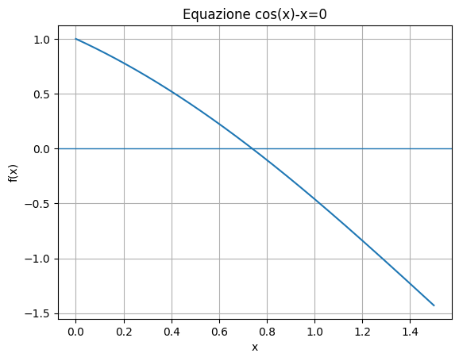
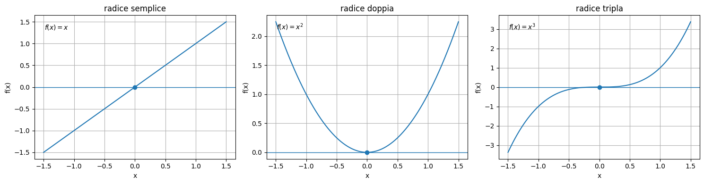
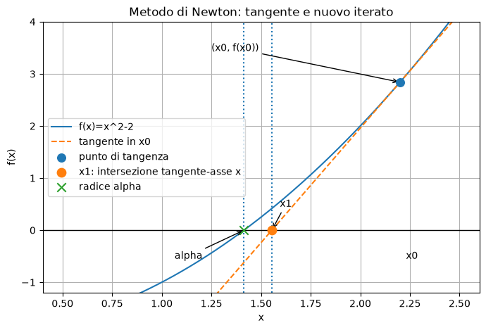

Risoluzione di equazioni non lineari#
L’obiettivo è risolvere l’equazione:
dove \(f:[a,b] \rightarrow R\) è una funzione continua. Questa equazione in generale non è risolubile con tecnoche analitiche, a meno di casi particolari di funzioni \(f(x)\).
Condizioni di esistenza e unicità della soluzione nel continuo
Se \(f\) è una funzione continua in [a,b] e tale che \(f(a)f(b)<0\), allora esiste almeno uno zero di \(f\) in \((a,b)\).
Il problema è determinare le radici di un’equazione non lineare
dove \(f\) è una funzione reale di variabile reale.
Una radice, o zero, è un valore \(x^{*}\) tale che
Nelle applicazioni, raramente esiste una formula esplicita per calcolare \(x^{*}\).
Per questo motivo si usano metodi numerici iterativi.
Un metodo iterativo costruisce una successione
che, sotto opportune ipotesi, converge alla radice desiderata:
Esempio introduttivo#
Consideriamo
Le radici sono
Se vogliamo approssimare la radice positiva, possiamo cercarla numericamente nell’intervallo \([1,2]\), perché
mentre
Il cambio di segno suggerisce, per continuità, che esiste almeno uno zero fra 1 e 2.
import numpy as np
import matplotlib.pyplot as plt
def f_intro(x):
return x**2 - 2
xs = np.linspace(0, 2.5, 300)
ys = f_intro(xs)
plt.figure()
plt.axhline(0, linewidth=1)
plt.plot(xs, ys)
plt.scatter([1, 2], [f_intro(1), f_intro(2)])
plt.title("Esempio: f(x)=x^2-2")
plt.xlabel("x")
plt.ylabel("f(x)")
plt.grid(True)
plt.show()

Numero di soluzioni di un’equazione non lineare#
Un’equazione non lineare può avere comportamenti molto diversi rispetto al numero di soluzioni.
Una equazione del tipo
può avere:
nessuna soluzione reale;
una sola soluzione reale;
due o più soluzioni reali;
un numero arbitrariamente grande di soluzioni;
infinite soluzioni.
Questo è uno dei motivi per cui non esiste un unico metodo universale che risolva automaticamente tutte le equazioni non lineari.
Prima di applicare un metodo numerico è spesso utile osservare il grafico della funzione o studiarne alcune proprietà qualitative.
# Esempi di equazioni non lineari con diverso numero di soluzioni reali.
x = np.linspace(-4, 4, 800)
funzioni = [
(lambda x: x**2 + 1, "nessuna soluzione", r"$f(x)=x^2+1$"),
(lambda x: x**2 - 1, "due soluzioni", r"$f(x)=x^2-1$"),
(lambda x: np.sin(x), "infinite soluzioni", r"$f(x)=\sin(x)$"),
]
fig, axes = plt.subplots(1, 3, figsize=(15, 4))
for ax, (f, titolo, formula) in zip(axes, funzioni):
y = f(x)
ax.plot(x, y)
ax.axhline(0, linewidth=1)
ax.set_title(titolo)
ax.set_xlabel("x")
ax.set_ylabel("f(x)")
ax.grid(True)
ax.text(0.05, 0.9, formula, transform=ax.transAxes)
# Evidenziamo gli zeri visibili nei casi in cui sono noti.
if titolo == "due soluzioni":
ax.scatter([-1, 1], [0, 0], zorder=3)
if titolo == "infinite soluzioni":
zeri = np.arange(-3, 4) * np.pi
zeri = zeri[(zeri >= x.min()) & (zeri <= x.max())]
ax.scatter(zeri, np.zeros_like(zeri), zorder=3)
plt.tight_layout()
plt.show()

Una equazione come
ha una soluzione nota in forma chiusa.
Ma equazioni come
oppure
non hanno, in generale, una soluzione esprimibile con funzioni elementari.
In questi casi vogliamo calcolare una approssimazione \(\tilde{x}\) tale che:
\(\tilde{x}\) sia vicina alla radice vera \(x^{*}\);
il residuo \(|f(\tilde{x})|\) sia piccolo;
il calcolo sia stabile e non troppo costoso.
def f_cos(x):
return np.cos(x) - x
xs = np.linspace(0, 1.5, 400)
ys = f_cos(xs)
plt.figure()
plt.axhline(0, linewidth=1)
plt.plot(xs, ys)
plt.title("Equazione cos(x)-x=0")
plt.xlabel("x")
plt.ylabel("f(x)")
plt.grid(True)
plt.show()

2bis. Molteplicità di una radice#
Una radice \(\alpha\) di una funzione \(f\) è detta radice di molteplicità \(m\) se si può scrivere
dove \(q\) è una funzione continua e
In particolare:
se \(m=1\), la radice è semplice;
se \(m>1\), la radice è multipla.
Per i polinomi, questa definizione coincide con il numero di volte in cui il fattore \((x-\alpha)\) compare nella fattorizzazione.
# Radici semplici, doppie e triple a confronto.
x = np.linspace(-1.5, 1.5, 600)
alpha = 0.0
f_simple = x
f_double = x**2
f_triple = x**3
fig, axes = plt.subplots(1, 3, figsize=(15, 4))
axes[0].plot(x, f_simple)
axes[0].axhline(0, linewidth=1)
axes[0].scatter([alpha], [0], zorder=3)
axes[0].set_title("radice semplice")
axes[0].text(0.05, 0.9, r"$f(x)=x$", transform=axes[0].transAxes)
axes[1].plot(x, f_double)
axes[1].axhline(0, linewidth=1)
axes[1].scatter([alpha], [0], zorder=3)
axes[1].set_title("radice doppia")
axes[1].text(0.05, 0.9, r"$f(x)=x^2$", transform=axes[1].transAxes)
axes[2].plot(x, f_triple)
axes[2].axhline(0, linewidth=1)
axes[2].scatter([alpha], [0], zorder=3)
axes[2].set_title("radice tripla")
axes[2].text(0.05, 0.9, r"$f(x)=x^3$", transform=axes[2].transAxes)
for ax in axes:
ax.set_xlabel("x")
ax.set_ylabel("f(x)")
ax.grid(True)
plt.tight_layout()
plt.show()

Osservazione geometrica#
Se la molteplicità è pari, la funzione spesso tocca l’asse \(x\) senza attraversarlo.
Questo significa che metodi basati sul cambio di segno, come la bisezione, possono non individuare direttamente la radice.
Se la molteplicità è dispari, la funzione attraversa l’asse \(x\), ma può farlo in modo molto piatto.
Anche in questo caso il problema può essere più difficile numericamente.
Algoritmi per calcolare la soluzione: metodi iterativi
Non è possibile in generale costruire metodi numerici che calcolino le radici di un’equazione non lineare in un numero finito di passi.
I metodi per questo tipo di problema sono metodi iterativi.
A partire da uno o pi\ug dati iniziali, calcolano dei valori \(x_k\) attraverso un procedimento che si ripete (itera) sempre uguale ad ogni passo k:
Si crea quindi una successione che deve avere la proprieta di essere convergente e di convergere alla soluzione esatta, cioè sotto opportune condizioni gli iterati \(x_k\) convergono alla soluzione \(x^*\) (tale che \(f(x^*)=0\)) per \(k \rightarrow \infty\). Schema algoritmo iterativo:
Dati: \(x_0\)
2.k=1
Ripeti finchè convergenza
3.1 \(x_k=G(x_{k-1})\)
3.2 \(k=k+1\)
end
Sono da specificare nel singolo metodo le condizioni di convergenza che regolano l’arresto del ciclo “ripeti”.
Ordine di converegenza dei metodi iterativi
Si dice che la successione \({x_k}\) generata da un metodo iterativo converge ad \(x^*\) con ordine \(p\geq 1\) se: $\( \frac{|x_{k+1}-x^*a|}{|x_k-x^*|^p}= C, \forall k\geq k_0\)\(dove \)k_0\( \eg un intero opportuno e \)C \in R$ tale che:
In tal caso si dice che il metodo è di ordine\(p\).
Osservazione. nel caso \(p=1\) per avere convergenza deve essere \(C<1\). In questo caso \(C\) prende il nome di fattore di convergenza.
# Simulazione di convergenza lineare e quadratica
errors_linear = [1e-1]
errors_quad = [1e-1]
for k in range(8):
errors_linear.append(0.5 * errors_linear[-1])
errors_quad.append(2.0 * errors_quad[-1]**2)
print("k lineare quadratica")
for k, (el, eq) in enumerate(zip(errors_linear, errors_quad)):
print(f"{k:1d} {el:.3e} {eq:.3e}")
k lineare quadratica
0 1.000e-01 1.000e-01
1 5.000e-02 2.000e-02
2 2.500e-02 8.000e-04
3 1.250e-02 1.280e-06
4 6.250e-03 3.277e-12
5 3.125e-03 2.147e-23
6 1.563e-03 9.223e-46
7 7.813e-04 1.701e-90
8 3.906e-04 5.790e-180
17. Ordine di convergenza per iterazioni funzionali#
Se \(g\) è sufficientemente regolare e \(x^{*}\) è un punto fisso, lo sviluppo di Taylor dà:
Se
e
allora l’ordine di convergenza è \(p\).
In generale la convergenza di un metodo iterativo per la risoluzione di un’equazione non lineare dipende dalla scelta del valore iniziale \(x_0\).
Esisteranno quindi risultati di convergenza globale quando il metodo converge per ogni scelta di \(x_0\) e teoremi di convergenza locale quando il metodo converge solo se \(x_0\) è scelto in un opportuno intorno della radice esatta.
*Algoritmi per il calcolo di uno zero della funzione \(f\)
Metodo di bisezione
Metodo del punto fisso
Metodo di Newton
8.1 Metodo di bisezione#
Si costruisce una successione di intervalli (\(f(a_1)<0,f(b_1)>0\)): $\(I_1=[a_1,b_1],I_2=[a_2,b_2], \ldots ,I_k=[a_k,b_k]\)\( tali che:\)\(I_k\subset I_{k-1} \subset \ldots \subset I_1\)\( con \)f(a_k)f(b_k)<0, k=1,2 \ldots\(. (\)a_1=a,b_1=b\(). Al passo \)k\( si calcola \)\(c_k=\frac{a_k+b_k}{2}, \quad k=1,2 \ldots \)\(e il valore \)f(c_k)\(. Se \)f(c_k)=0,c_k=x^*\(, altrimenti: \)\([a_{k+1},b_{k+1}]=\left\{ \begin{array}{ll} [a_k,c_k], & \hbox{se \)f(c_k)>0\(}\\ 1 [c_k,b_k], & \hbox{se \)f(c_k)<0\(.} \end{array} \right. \)$
Osservazioni sulla implementazione dell’algoritmo con i numeri finiti
\(c=a+\frac{b-a}{2}\) altrimenti \(c_{k+1}\) pu\og cadere esterno all’intervallo \([a_k,b_k]\).
esempio: \(a=0.983,b=0.986\),\(\mathbb{F}(10,3,-5,5)\).
\(f(a)f(b)\) pu\og non essere rappresentabile sulla macchina. per verificare il segno conviene quindi usare la funzione \(sign(f)\)
L’algoritmo in aritmetica finita pu\og non avere fine.
esempio: \(a_k=98.5\), \(b_k=98.6\), \(\epsilon=0.004\) in \(\mathbb{F}(10,3,-5,5)\). Infatti \(c_k=98.55\), ma \(fl(c_k)=0.985\cdot 10^{2}\), quindi si genera una successione di iterati costanti.
Test modificato: $\(|b_k-a_k|<\epsilon +eps\cdot max(|b|,|a|) \quad \& \quad iter<itmax\)\( dove \)eps$ è la precisione di macchina.
Convergenza del metodo di bisezione
Al passo \(k\), $\(b_{k+1}-a_{k+1}=\frac{1}{2}(b_k-a_k)=\frac{1}{2^2}(b_{k-1}-a_{k-1})= \ldots =\frac{1}{2^k}(b_1-a_1)\)\( quindi \)x^*=c_{k+1}\pm\epsilon_{k+1}$, dove
Viceversa, fissato \(\epsilon\) tale che \(\epsilon=\frac{1}{2^{k+1}}(b-a)\), il numero \(c_{k+1}\) \eg una approssimazione di \(x^*\) entro una tolleranza \(\epsilon\).
Quindi per \(k\rightarrow \infty\), \(\{c_k\} \rightarrow x^*\) con velocità di convergenza pari a quella della successione \(\{\frac{1}{2^k}\}\).
Il metodo fornisce inoltre una maggiorazione dell’errore, cioè fissata una tolleranza \(\delta\) è possibile determinare il numero minimo di iterazioni \(k\) per ottenere un errore minore di \(\delta\). Infatti \(k\) è tale che: $\(\frac{1}{2^k}(b-a)<\delta \Rightarrow 2^k\geq \frac{b-a}{\delta}\Rightarrow\)\( \)\(k\geq log_2\frac{b-a}{\delta}\)$ Complessità computazionale del metodo: ad ogni iterazione occorrono 2 valutazioni di funzione.
def bisection(f, a, b, tol=1e-12, max_iter=100, return_history=False):
fa = f(a)
fb = f(b)
if fa == 0:
return (a, 0, []) if return_history else (a, 0)
if fb == 0:
return (b, 0, []) if return_history else (b, 0)
if fa * fb > 0:
raise ValueError("La funzione deve cambiare segno in [a,b].")
history = []
for k in range(1, max_iter + 1):
m = 0.5 * (a + b)
fm = f(m)
history.append((k, a, b, m, fm, b - a))
if abs(b - a) <= tol or fm == 0:
return (m, k, history) if return_history else (m, k)
if fa * fm < 0:
b = m
fb = fm
else:
a = m
fa = fm
return (0.5 * (a + b), max_iter, history) if return_history else (0.5 * (a + b), max_iter)
La tabella seguente mostra come si restringe l’intervallo.
for row in hist[:10]:
k, a, b, m, fm, width = row
print(f"k={k:2d}, a={a:.12f}, b={b:.12f}, m={m:.12f}, f(m)={fm:.3e}, ampiezza={width:.3e}")
---------------------------------------------------------------------------
NameError Traceback (most recent call last)
Cell In[7], line 1
----> 1 for row in hist[:10]:
2 k, a, b, m, fm, width = row
3 print(f"k={k:2d}, a={a:.12f}, b={b:.12f}, m={m:.12f}, f(m)={fm:.3e}, ampiezza={width:.3e}")
NameError: name 'hist' is not defined
Numero di iterazioni richieste#
Se vogliamo un errore finale di al più \(\mathrm{tol}\), dobbiamo avere
Da cui
Quindi il numero di iterazioni cresce solo logaritmicamente rispetto alla tolleranza, ma il metodo rimane relativamente lento perché a ogni passo guadagna circa una cifra binaria.
def bisection_iterations_needed(a, b, tol):
return math.ceil(math.log2((b - a) / tol))
for tol in [1e-3, 1e-6, 1e-9, 1e-12]:
print(f"tol={tol:.0e}, iterazioni richieste circa:", bisection_iterations_needed(1, 2, tol))
tol=1e-03, iterazioni richieste circa: 10
tol=1e-06, iterazioni richieste circa: 20
tol=1e-09, iterazioni richieste circa: 30
tol=1e-12, iterazioni richieste circa: 40
Limiti del metodo di bisezione
Vantaggi:
è semplice;
è robusto;
converge sempre se \(f\) è continua e cambia segno;
non richiede di valutare la funzione, ma solo il suo segno;
non richiede derivate.
Svantaggi:
converge lentamente;
usa solo il segno di \(f\), non la sua forma. Di conseguenza può richiedere infinite iterazioni per calcolare lo zero di una retta \(f(x)=ax+b\);
se in un intervallo ci sono più radici, ne approssima una sola;
non funziona direttamente per radici di molteplicità pari se non c’è cambio di segno.
8.2 Metodo del punto fisso#
Il problema di cercare una radice di $\(f(x)=0\)\( viene spostato nel problema di cercare una soluzione dell'equazione \)\(x=g(x)\)\( cioè un punto fisso della funzione \)g(x)$ dove
Perchè calcolare \(f(x)=0\) è equivalente a calcolare \(x=g(x)\) (per una opportuna funzione \(g\))?
Se \(f(x)\) si annulla in \([a,b]\) e \(\Phi(x)\) è una funzione tale che:
allora :
se \(f(x)=0\) allora \(g(x)=x-0*f(x)=x\)
se \(g(x)=x\) allora, poichè \(\Phi(x)\) non si annulla, necessariamente è \(f(x)=0\).
Geometricamente è l’intersezione delle due curve: $\(y=x \ \ \ y=g(x)\)$
def fixed_point(g, x0, tol=1e-12, max_iter=100, return_history=False):
x = float(x0)
history = [x]
for k in range(1, max_iter + 1):
x_new = g(x)
history.append(x_new)
if abs(x_new - x) <= tol:
return (x_new, k, history) if return_history else (x_new, k)
x = x_new
return (x, max_iter, history) if return_history else (x, max_iter)
Per potere applicare il metodo numerico, o l’algoritmo, nel caso discreto devono essercinin generale delle condizioni da verificare nel caso continuo. Se non si verificano queste condizioni e quindi non è possibile calcolare la soluzione nel caso continuo, allora non ha senso applicare l’algortimo anche nel caso discreto.
Questo teorema è un esempio di tali condizioni.
Teorema di esistenza e unicità del punto fisso nel modello continuo
Sia \(g(x)\) continua in \([a,b]\) e tale che \(g(x) \in [a,b]\). Sia \(L\) una costante \(0\leq L<1\) tale che, per ogni \(x, y \in [a,b]\) si ha: $\(|g(x)-g(y)|\leq L|x-y|\)\( ossia \)g\( è una contrazione in \)[a,b]\(. Allora esiste un unico punto fisso \)x^*\( di \)g(x)\( in \)[a,b]$.
Come tutti i teoremi ha una dimostrazione che non tratteremo in questo corso (così come in geerale le dimostrazioni dei teoremi) poichè non è la parte teorica il focus del corso e visto il tempo ridotto a disposizione. Per chi ha interesse a vederla potete consultare il testo….
Esempio
L’equazione
può essere scritta come
Quindi usiamo
Algoritmo del punto fisso
Data una approssimazione iniziale \(x_0\) di \(x^*\), punto fisso di \(g(x)\) in \([a,b]\), si genera una successione di iterati mediante il metodo delle approssimazioni successive o del punto fisso o iterazione funzionale:
N.B. in un metodo iterativo, dopo avere espresso la regola per costruire la successione \(x_0,x_1, \ldots x_k \ldots\) si devono dare le condizioni per cui questa successione è effettiamnte convergente alla soluzione cercata. Altrimenti non è utilizzabile.
root, it, hist = fixed_point(np.cos, x0=1.0, tol=1e-12, return_history=True)
print("Punto fisso:", root)
print("Iterazioni:", it)
print("Residuo cos(x)-x:", math.cos(root) - root)
for k, xk in enumerate(hist[:10]):
print(f"k={k:2d}, x_k={xk:.12f}")
Punto fisso: 0.7390851332147725
Iterazioni: 69
Residuo cos(x)-x: 6.495914917081791e-13
k= 0, x_k=1.000000000000
k= 1, x_k=0.540302305868
k= 2, x_k=0.857553215846
k= 3, x_k=0.654289790498
k= 4, x_k=0.793480358743
k= 5, x_k=0.701368773623
k= 6, x_k=0.763959682901
k= 7, x_k=0.722102425027
k= 8, x_k=0.750417761764
k= 9, x_k=0.731404042423
Osservazione
Se \(g(x)\) è derivabile in \([a,b]\) con \(|g'(x)|\leq L<1\) per \(x \in [a,b]\), allora \(g(x)\) è una contrazione. Il viceversa non è vero perchè \(g(x)\) può non essere derivabile.
In questo caso ci sono due teoremi che assicurano la convergenza: il primo pone le condizioni affibchè la successione creata sia una successione che converge a un certo punto \(x^*\), il secondo teorema assicura che il punto \(x^*\) è esattamente il punto voluto, cioè uno zero della funzione \(f(x)\).
Teorema 1 (la successione converge a un punto).
Se \(g(x)\) è continua e la successione \(\{x_k\}\) converge per \(k \rightarrow \infty\) a un punto \(x^*\), allora \(x^*\) è punto fisso di \(g(x)\). Infatti:
Geometricamente, il metodo dell’iterazione funzionale equivale alla costruzione di una poligonale orientata con lati orizzontali e verticali nel piano \(xy\).


Teorema 2 (il punto di convergenza è uno zero della funzione). Convergenza globale
Sia \(g(x)\) una funzione definita in \([a,b]\). Sia:
\(g(x)\) continua in \([a,b]\),
\(g(x) \in [a,b]\) -\(g(x)\) una contrazione in \([a,b]\)
Allora per ogni \(x_0 \in [a,b]\) la successione degli iterati \(\{x_k\}\) con \(x_k=g(x_{k-1}), k=1,2 \ldots\) converge per \(k \rightarrow \infty\) all’unico punto fisso \(x^+\) di \(g(x)\) in \([a,b]\). Inoltre vale: $\(|x_k-x^*|\leq \frac{\lambda^k}{1-\lambda}|x_1-x_0|\)$
Distinguiamo la convergenza globale dalla convergenza locale. Convergenza globale significa che il metodo, sotto opportune condizioni, converge per ogni iterato iniziale \(x_0\) nell’intervallo di riferimento, mentre convergenza locale significa che il metodo converge se \(x_0\) appartiene ad un opportuno intorno della soluzione (intorno che oviamente non si conosce).
Esempio.
si considera \(x_0=1.5\).
\(x=x-x^3-4x^2+10=g_1(x)\)
\(x=\left(\frac{1}{x}-4x\right)^{1/2}=g_2(x)\) (da \(x^3=10-4x^2\))
\(x=\frac{1}{2}(10-x^3)^{1/2}=g_3(x)\) (da \(x^2=\frac{1}{4}(10-x^3)\))
\(x=\left(\frac{10}{x+4}\right)^{1/2}=g_4(x)\) (da \(x^3+4x^2=10\))
\(xx-\frac{x^3+4x^2-10}{3x^2+8x}=g_5(x)\) (da \(x=x-\frac{f(x)}{f'(x)}\)).

Non tutte le scelte portano ad un metodo convergente (caso 1) o ben definito (caso 2). Inoltre la velocità di convergenza del metodo è diversa nei vari casi (con il metodo di bisezione per avere la stessa precisione sono necessarie 27 valutazioni di funzione
\(g'_1(x)=1-3x^2-8x,|g'(x)|>1 \quad x\in[1,2]\)
\(g_2(x)\) è definita per \(-\sqrt{1}/2\leq x\leq \sqrt{1}/2 \simeq 1.581113\), \(\Rightarrow g_2(x) \notin [1,2]\)
\(|g'_3(x)|=\frac{-3x^2}{4(10-x^3)^{1/2}}\), dunque \(g'_3(x)\leq 2.1213\), però in \([1,1.5], |g'_3(x)|=|g'_3(1.5)|\backsimeq 0.6556<1\)
\(g'_4(x)=\frac{1}{2}\sqrt{\frac{x+4}{10}}\), per cui \(|g'_4(x)|\leq 0.15\), la convergenza è piùg rapida che nel caso (3).
\(g'_5(x)=\frac{6x^4+32x^3+32x^2-60x-80}{(3x^2+8x)^2}\) in \([1,2], |g'_5(x)|\leq 0.6\). Tuttavia \(g_5(x)\) è il metodo a convergenza più rapida .
Teorema di convergenza locale
Sia \(x^*\) un punto fisso di \(g(x)\); si suppone che \(g(x)\) sia continua e sia una contrazione per ogni \(x \in [x^*-\rho, x^*+\rho]=I_\rho\). \ Allora, per ogni \(x_0 \in I_\rho\), la successione degli \(\{x_k\}\) è ben definita, ossia \(x_k \in I_\rho\) e converge per \(k \rightarrow \infty\) a \(x^*\).\ Inoltre, \(x^*\) è l’unico punto fisso di \(g(x)\) in \(I_\rho\).
Criteri di arresto
Occorre determinare un criterio per vedere se l’approssimazione ottenuta è un punto fisso di \(g(x)\) ossia se \(x-g(x)=\phi(x)f(x)=0\).
Si ritiene che \(x_k\) sia una approssimazione accettabile se contemporaneamente:
oppure
dove \(\epsilon_1,\epsilon_2,\sigma_1,\sigma_2\) sono tolleranze assegnate e \(f_{\max}=\max_{x\in I_\rho}|f(x)|\)
8.3 Metodo di Newton#
Data l’equazione \(f(x)=0\), si può determinare la soluzione \(x^*\) come punto fisso di
Quindi l’iterazione del metodo di Newton è:
Interpretazione geometrica
Il metodo di Newton sostituisce la funzione con la retta tangente nel punto \(x_k\).
La tangente a \(f\) in \(x_k\) è
L’intersezione della tangente con l’asse \(x\) si ottiene imponendo \(y=0\):
da cui
Il grafico seguente mostra un singolo passo del metodo di Newton.
A partire da \(x_0\), si costruisce la tangente alla curva \(y=f(x)\) nel punto \((x_0,f(x_0))\).
L’intersezione della tangente con l’asse \(x\) è il nuovo iterato \(x_1\).
# Interpretazione geometrica di un passo del metodo di Newton.
# Scelgo x0=2.2, così il nuovo iterato x1 è ben distinto dalla radice sqrt(2).
f = lambda x: x**2 - 2
df = lambda x: 2*x
x0 = 2.2
x1 = x0 - f(x0)/df(x0)
alpha = math.sqrt(2)
xs = np.linspace(0.5, 2.5, 600)
tangent = f(x0) + df(x0) * (xs - x0)
plt.figure(figsize=(8, 5))
plt.plot(xs, f(xs), label="f(x)=x^2-2")
plt.plot(xs, tangent, "--", label="tangente in x0")
plt.axhline(0, color="black", linewidth=1)
# Punti importanti
plt.scatter([x0], [f(x0)], s=70, zorder=4, label="punto di tangenza")
plt.scatter([x1], [0], s=80, zorder=5, label="x1: intersezione tangente-asse x")
plt.scatter([alpha], [0], s=80, marker="x", zorder=5, label="radice alpha")
# Linee verticali per rendere distinguibili x1 e alpha
plt.axvline(x1, linestyle=":", linewidth=1.5)
plt.axvline(alpha, linestyle=":", linewidth=1.5)
plt.annotate("x0", xy=(x0, 0), xytext=(x0+0.03, -0.55))
plt.annotate("x1", xy=(x1, 0), xytext=(x1+0.04, 0.45),
arrowprops=dict(arrowstyle="->"))
plt.annotate("alpha", xy=(alpha, 0), xytext=(alpha-0.35, -0.55),
arrowprops=dict(arrowstyle="->"))
plt.annotate("(x0, f(x0))", xy=(x0, f(x0)), xytext=(1.25, f(x0)+0.6),
arrowprops=dict(arrowstyle="->"))
plt.title("Metodo di Newton: tangente e nuovo iterato")
plt.xlabel("x")
plt.ylabel("f(x)")
plt.ylim(-1.2, 4.0)
plt.grid(True)
plt.legend()
plt.show()
print("x0 =", x0)
print("x1 =", x1)
print("radice alpha =", alpha)
print("|x1-alpha| =", abs(x1-alpha))

x0 = 2.2
x1 = 1.5545454545454547
radice alpha = 1.4142135623730951
|x1-alpha| = 0.14033189217235953
def newton(f, df, x0, tol_x=1e-12, tol_f=1e-14, max_iter=50, return_history=False):
x_old = float(x0)
history = [(0, x_old, f(x_old), None)]
for k in range(1, max_iter + 1):
fx = f(x_old)
dfx = df(x_old)
if abs(dfx) < np.finfo(float).tiny:
raise ZeroDivisionError("Derivata troppo piccola o nulla.")
x_new = x_old - fx / dfx
step = abs(x_new - x_old)
history.append((k, x_new, f(x_new), step))
if step <= tol_x + np.finfo(float).eps * min(abs(x_new), abs(x_old)):
return (x_new, k, history, "step") if return_history else (x_new, k)
if abs(f(x_new)) <= tol_f:
return (x_new, k, history, "residual") if return_history else (x_new, k)
x_old = x_new
return (x_old, max_iter, history, "max_iter") if return_history else (x_old, max_iter)
f = lambda x: x**2 - 2
df = lambda x: 2*x
root, it, hist, reason = newton(f, df, x0=1.0, return_history=True)
print("Radice:", root)
print("Iterazioni:", it)
print("Motivo arresto:", reason)
print("Errore:", abs(root - math.sqrt(2)))
for k, xk, fxk, step in hist:
print(f"k={k:2d}, x={xk:.15f}, f(x)={fxk:.3e}, step={step}")
Radice: 1.4142135623730951
Iterazioni: 5
Motivo arresto: residual
Errore: 0.0
k= 0, x=1.000000000000000, f(x)=-1.000e+00, step=None
k= 1, x=1.500000000000000, f(x)=2.500e-01, step=0.5
k= 2, x=1.416666666666667, f(x)=6.944e-03, step=0.08333333333333326
k= 3, x=1.414215686274510, f(x)=6.007e-06, step=0.002450980392156854
k= 4, x=1.414213562374690, f(x)=4.511e-12, step=2.123899820016817e-06
k= 5, x=1.414213562373095, f(x)=4.441e-16, step=1.5947243525715749e-12
Teorema di convergenza locale del metodo di Newton
Sia \(x^*\) uno zero di \(f(x)\). Sia \(f(x)\) continua insieme alle sue derivate prima, seconda e terza.
Sia \(f'(x)\neq 0\) per \(x\) in un opportuno intorno di \(x^*\) e sia \(f''(x^*)\neq 0\) (\(f(x)/f'(x)\) deve essere definita e deve essere \(g''(x)\neq 0\)).
Allora, per ogni \(x_0 \in I_\rho\), la successione generata dal metodo di Newton converge a \(x^*\) in modo quadratico.
Velocità di convergenza del metodo di Newton
Il metodo iterativo ha quindi velocità di convergenza quadratica, cioè l’ordine di convergenza del metodo di Newton è p=2.
Esempio 1
\(\sin(x)-\left(\frac{x}{2}\right)^2\) in \([1,2].\)
\(f'(x)=\cos(x)-\frac{x}{2}; \qquad f''(x)=-\sin(x)-\frac{1}{2}\)
\(\displaystyle{x_{k+1}=x_k-\frac{\sin(x_k)-\left(\frac{x_k}{2}\right)^2}{\cos(x)-\frac{x_k}{2}}}\)
costante asintotica d’errore \(\frac{g''(x^*)}{2}=\frac{f''(x^*)}{2f'(x^*)}\simeq0.54\)

Esempio 2
\(x^2-\gamma=0\)
\(\displaystyle{x_{k+1}=x_k-\frac{x_k^2-\gamma}{2x_k}}=\frac{1}{2}\left( x_k + \frac{\gamma}{x_k}\right)\)
Per \(\gamma=2\) e \([1,2]\) si ha:

costante asintotica d’errore
\(\frac{f''(x^*)}{2f'(x^*)}=\frac{1}{2\sqrt{\gamma}}\); se \(\gamma\) è piccolo, la convergenza può essere lenta.
Considerazioni algoritmiche
I criteri di arresto del metodo di newton sono gli stessi del metodo delle approssimazioni successive.
La complessità computazionale del metodo di Newton è pari ad una valutazione della funzione e una valutazione della derivata prima per passo.
Se la complessit\ag di \(f'\) è analoga a quella di \(f\), si dice che il metodo richiede due valutazioni di funzioni per passo.